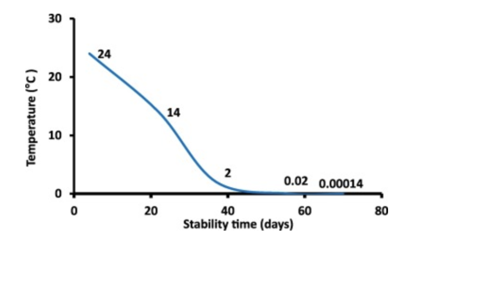

A negative effect was observed for the stability of CoV-19 virus against rise in temperature. Therefore, countries such as India, having hot and humid climate, might be getting its advantage to have low infection and death rate as compared to other cold climate countries.
In this context, pollution and unhygienic levels in many ecosystems under dominant activities of humans (including urbanization, fossil fuel exhaustion, industrialization and discharges of its effluents to water bodies) are beyond the limit.
Viability of CoV-19 virus found to have a lot of correlation with aquatic and terrestrial environmental parameters such as pH, surface type, temperature etc. Air pollution is found to increase the risk of COVID-19 infection, therefore, use of mask and alcohols based standard sterilisers is strongly recommended. However, the self-revival rate of nature shall continue during the post-lockdown period and a master plan must be adapted by national and international (mostly political) bodies to revive Mother Nature completely.
ESA JAXA NASA